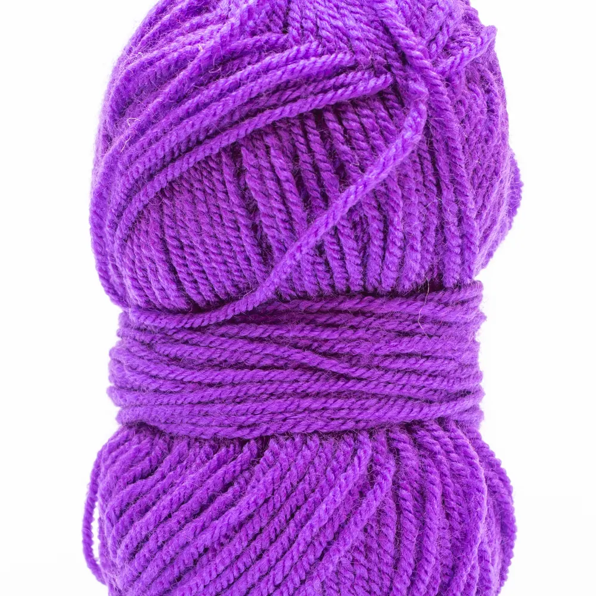
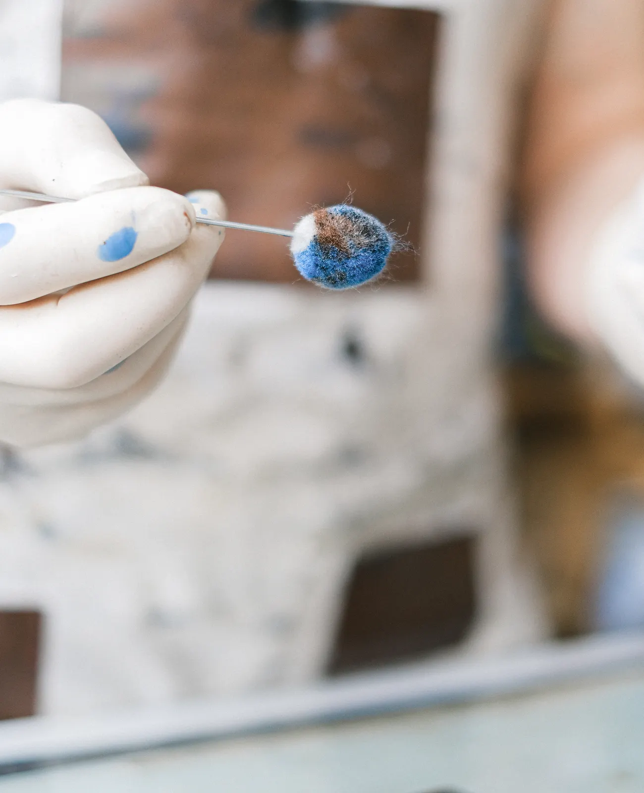
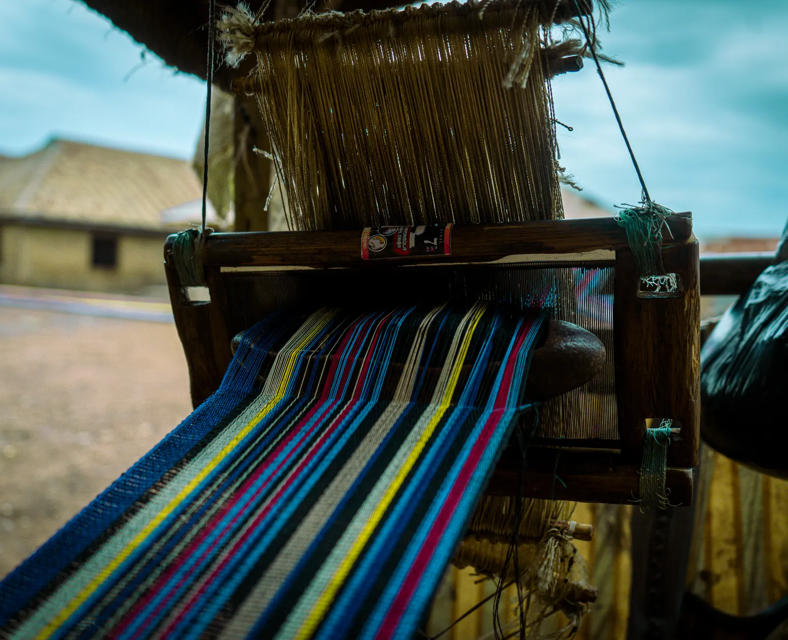
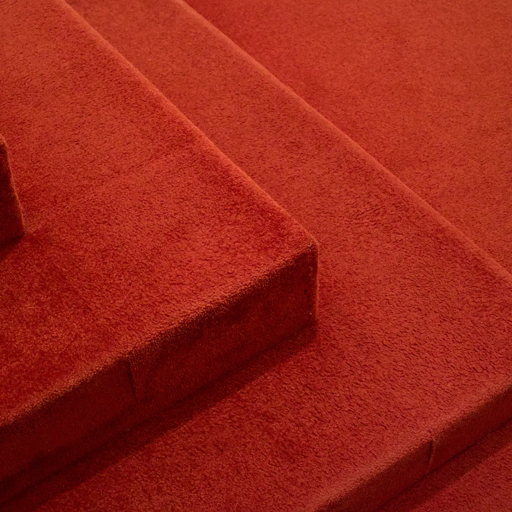
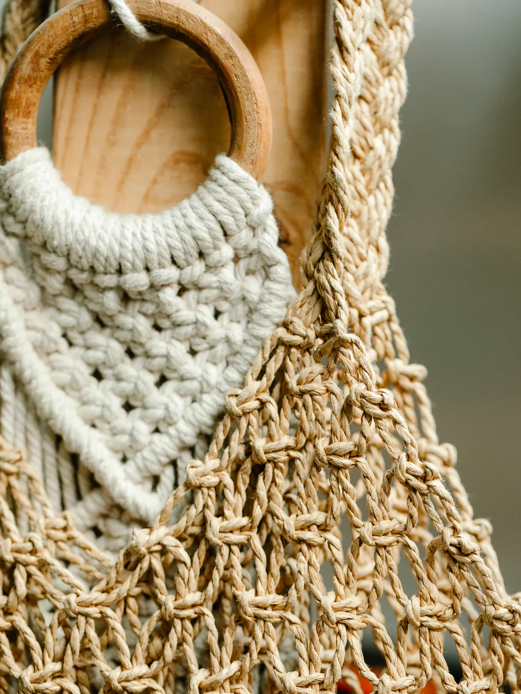
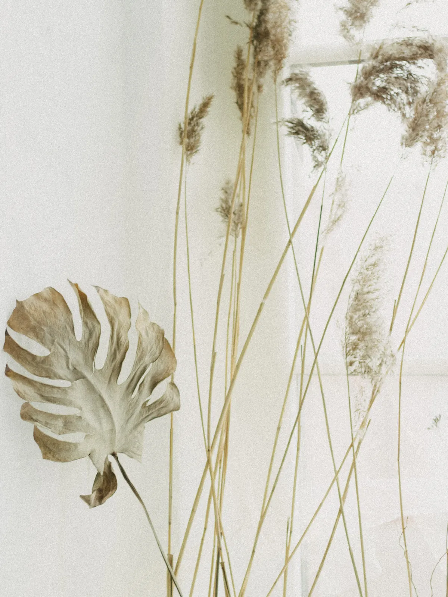
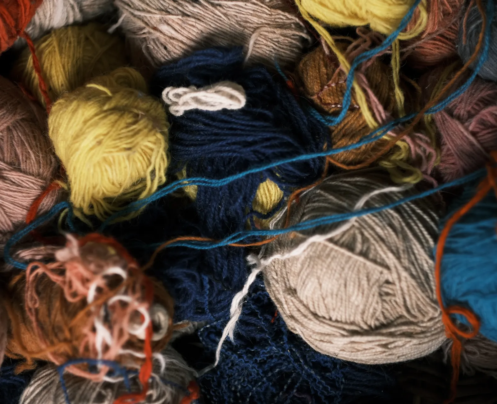

01
Fieltro
Transformás lana suelta en una pieza sólida, con aguja y paciencia. La técnica más directa para empezar.
Tu primera pieza fieltrada, lista
Quiero el curso de fieltroTalleres a tu ritmo
Cursos pensados para hacer con las manos, a tu ritmo y con guía real. Elegís la técnica, te acompañamos por WhatsApp, y terminás con algo hecho por vos.

Lo que armás con tus manos queda. Y lleva tu ADN.

Sobre AdN
AdN nació para compartir oficios manuales que se sienten en las manos: fieltro, tufting, trapillo y biomateriales. Cada curso está armado para que salgas con una técnica aprendida de verdad — no un tutorial a medias que después no sabés cómo seguir.
Sin plataforma, sin videos sueltos, sin quedarte sola con las dudas: la guía es directa, por WhatsApp, con alguien del otro lado.
Así se arma, hilo por hilo
Toda técnica que enseñamos empieza igual: materia prima suelta, una herramienta, y minutos de trabajo repetido hasta que algo nuevo toma forma. Scrolleá para verlo.
La oferta

Transformás lana suelta en una pieza sólida, con aguja y paciencia. La técnica más directa para empezar.
Tu primera pieza fieltrada, lista
Quiero el curso de fieltro
Armás tu propia alfombra o cuadro tejido, punto por punto, con la técnica que está en todos lados.
Una pieza tufteada, en tu paleta
Quiero el curso de tufting
Tejés tu propia cartera con trapillo, de cero a terminada, con la estructura que quieras darle.
Una cartera tejida por vos, para usar
Quiero el curso de trapillo
Explorás materiales naturales y sustentables para crear piezas con otra conciencia, desde otro lugar.
Piezas hechas con materiales que elegís vos
Quiero el curso de biomateriales¿Buscás otra técnica? Contame qué querés aprender y lo vemos juntas.
Preguntar por otra técnica →El método

01Fieltro, tufting, trapillo o biomateriales: arrancás por la que más te llama. Nada te obliga a saber ya qué querés hacer.
Clases pensadas para hacer en casa, con guía directa por WhatsApp cuando la necesites. Sin horarios fijos, sin plataforma.
No es teoría: terminás con algo hecho por vos, de principio a fin. Eso es lo que te queda.
Antes de escribirnos
No. Los cursos arrancan desde cero: aprendés la técnica paso a paso, a tu ritmo.
Te paso el detalle exacto de materiales por WhatsApp según el curso que elijas, así sabés justo qué vas a necesitar.
Con guía directa por WhatsApp: consultás tus dudas, mandás fotos de tu avance y seguís a tu propio ritmo, sin horarios fijos ni plataforma.
Sí, podés combinar las técnicas que quieras. Contame cuáles te interesan y armamos algo a medida.
Arrancá cuando quieras
Contanos qué te pareció esta demo — se lo pasamos directo a quien la armó.